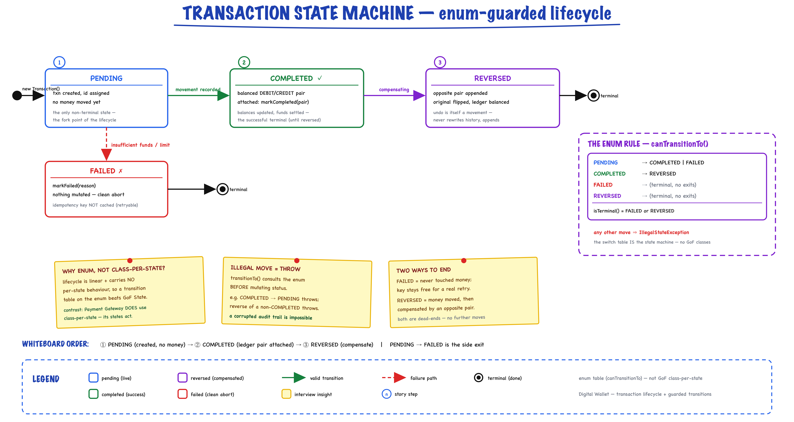

Digital Wallet System // LLD
Paytm/Venmo-style wallet: top-up, withdraw, and atomic peer-to-peer transfers on a double-entry ledger. The hard parts are concurrency correctness (deadlock-free ordered locking) and accounting invariants (a ledger that always nets to zero) — not payment-method routing.
01 — Requirements
Functional
- Accounts — create a wallet starting at a zero balance
- Top-up — credit a wallet with money from the outside world (modelled as SYSTEM → wallet)
- Withdraw — debit a wallet (wallet → SYSTEM), rejected on insufficient funds
- Transfer — atomic P2P: debit A and credit B, all-or-nothing
- Idempotent transfer — replaying an idempotency key returns the original result without moving funds twice
- Reversal — undo a completed transaction with a compensating movement (COMPLETED → REVERSED)
- Double-entry ledger — every movement recorded as a balanced DEBIT/CREDIT pair
- Limits (Strategy) — pluggable per-account daily transfer limit / fee policy
- Notifications (Observer) — fire on terminal transaction events
- History — per-account list of transactions, including failed attempts
Non-Functional
- Money precision — BigDecimal, scale 2, HALF_EVEN; never double
- Thread-safe balances — per-account ReentrantLock; no lost updates under concurrency
- Deadlock-free — two-account operations lock in a global id order
- Atomicity — debit + credit + ledger append happen under both locks; a failed operation mutates nothing
- Idempotency — at-most-once execution per key; replays are free reads
- Auditability — append-only ledger; illegal state transitions rejected
- Extensibility — new limit policy / observer / operation without touching the movement core
02 — Core Entities
| Entity | Layer | Purpose |
|---|---|---|
| Money | model (VO, final) | Immutable BigDecimal at scale 2 / HALF_EVEN; arithmetic + sign checks only (plus, minus, negate, isLessThan, isPositive) |
| Account | model (final) | Owner + balance + its own ReentrantLock; credit/debit guarded; SYSTEM account allows overdraft |
| Transaction | model (final) | Auditable record; mutable status with validated transitions; holds its two ledger entries; describes flow from → to |
| LedgerEntry | model (VO, final) | Immutable line: (txn, account, DEBIT/CREDIT, positive amount, time); signedAmount() projects the sign |
| WalletCommand | service (interface) | Command: execute() → Transaction. TopUp / Withdraw / Transfer / Reversal implement it |
| DigitalWallet | root (facade) | Wires registry + ledger + engine; owns the single SYSTEM cash account; the object an interviewer reads first |
Enums
| Enum | Values | Key Logic |
|---|---|---|
| TransactionType | TOP_UP, WITHDRAWAL, TRANSFER, REVERSAL | Every type is the same primitive: a movement between two accounts |
| TransactionStatus | PENDING, COMPLETED, FAILED, REVERSED | canTransitionTo() encodes the legal transition table; illegal transitions throw |
| EntryDirection | DEBIT(−1), CREDIT(+1) | sign() — a balanced pair sums to zero |
Service Interfaces
| Interface | Responsibility |
|---|---|
| AccountService | Account registry + lookup + balance |
| LedgerService | Append balanced pairs; totalBalance(), reconciledBalance() |
| TransactionService | topUp / withdraw / transfer / reverse / history + observers |
| TransferPolicy | Strategy: validate + onCompleted (limits / fees) |
| TransactionObserver | onTransaction callback on terminal events |
03 — Design Patterns
Five patterns, each earning its place — the interview differentiator.
Command — per operation
WalletCommand: TopUp / Withdraw / Transfer / Reversal each carry their own pre-conditions (funds check, policy gate, idempotency) yet all funnel into one atomic performMovement core. Why: extend uniformly (queue, retry, audit) without duplicating the locking/ledger dance.
Strategy — TransferPolicy
TransferPolicy for limit/fee rules: swap UnlimitedTransferPolicy for DailyLimitTransferPolicy (or a KYC-tier policy) with zero core change. Why: OCP — no if/else on config flags.
Observer — notifications
TransactionObserver + LoggingTransactionObserver. Notifications / fraud / analytics are cross-cutting and must not couple to money movement. Why: add consumers without touching the engine.
State — transaction status
TransactionStatus.canTransitionTo encodes PENDING → COMPLETED/FAILED, COMPLETED → REVERSED. A behaviour-free lifecycle, so an enum table beats GoF class-per-state. Illegal transitions throw, protecting the audit trail.
Facade — DigitalWallet
The single entry point wiring the account registry, the double-entry ledger, and the transaction engine, and owning the SYSTEM cash account. All the complexity above is reachable through one small, task-focused API.
04 — Transaction State Machine
Why an enum, not class-per-state? The lifecycle is linear and carries no per-state behaviour, so the legal transitions live directly on the enum via canTransitionTo. (Payment gateway uses GoF State because its states do carry behaviour.) Any illegal transition throws, so a corrupted audit trail is impossible.

Enum-guarded lifecycle — PENDING → COMPLETED/FAILED, COMPLETED → REVERSED. The canTransitionTo switch table is the state machine (no GoF class-per-state); any illegal move throws, so a corrupted audit trail is impossible.
Transition Table in Code
public enum TransactionStatus { PENDING, COMPLETED, FAILED, REVERSED; public boolean isTerminal() { return this == FAILED || this == REVERSED; } public boolean canTransitionTo(TransactionStatus target) { switch (this) { case PENDING: return target == COMPLETED || target == FAILED; case COMPLETED: return target == REVERSED; case FAILED: case REVERSED: default: return false; } } }
Guarded Transitions on Transaction
public synchronized void markCompleted(List<LedgerEntry> ledgerEntries) { transitionTo(TransactionStatus.COMPLETED); // PENDING -> COMPLETED this.entries.clear(); this.entries.addAll(ledgerEntries); // attach the balanced pair } private void transitionTo(TransactionStatus target) { if (!status.canTransitionTo(target)) throw new IllegalStateException( "Illegal transaction state transition " + status + " -> " + target); this.status = target; }
05 — Command Pattern
One primitive, four commands. Every operation — top-up, withdraw, transfer, reversal — is the same double-entry movement of money from one account to another. Each command carries its own pre-conditions but delegates the atomic work to the shared performMovement core.
WalletCommand Interface
interface WalletCommand { Transaction execute(); }
| Command | Movement | Funds check? |
|---|---|---|
| TopUpCommand | SYSTEM → wallet | no — SYSTEM may overdraw |
| WithdrawCommand | wallet → SYSTEM | yes |
| TransferCommand | walletA → walletB | yes (+ policy gate) |
| ReversalCommand | reverse of original | yes |
TransferCommand — policy gate, then shared core
final class TransferCommand implements WalletCommand { public Transaction execute() { policy.validate(from, to, amount); // Strategy pre-check (limits) Transaction txn = service.performMovement( // shared atomic core TransactionType.TRANSFER, from, to, amount, idempotencyKey); policy.onCompleted(from, to, amount); // accrue usage on success return txn; } }
ReversalCommand — compensating movement
public Transaction execute() { if (original.status() != TransactionStatus.COMPLETED) throw new IllegalStateException("Only COMPLETED can be reversed"); Account revFrom = resolve(original.toAccountId()); // money flows back... Account revTo = resolve(original.fromAccountId()); // ...to the original payer Transaction compensating = service.performMovement(TransactionType.REVERSAL, revFrom, revTo, original.amount(), null); original.markReversed(); // COMPLETED -> REVERSED return compensating; }
If the compensating movement itself fails (recipient already spent the money), the original stays COMPLETED and the failure propagates — the ledger is never left unbalanced.
06 — Ordered-Lock Transfer + Idempotency
Deadlock-free Ordered-Locking Transfer — the signature detail
A transfer must debit A and credit B as one indivisible step, so we hold both account locks. The classic bug: thread 1 does transfer(A→B) and locks A then B, while thread 2 does transfer(B→A) and locks B then A → circular wait → deadlock.
Fix: impose a global total order on locks and always acquire in that order, regardless of transfer direction. We order by account id.
Transaction performMovement(TransactionType type, Account from, Account to,
Money amount, String idempotencyKey) {
Transaction txn = new Transaction(txnIdSeq.incrementAndGet(), type,
from.id(), to.id(), amount, idempotencyKey);
ReentrantLock firstLock = lower(from, to).lock(); // smaller account id
ReentrantLock secondLock = higher(from, to).lock(); // larger account id
firstLock.lock(); secondLock.lock();
try {
if (!from.allowsOverdraft() && from.balance().isLessThan(amount))
throw new InsufficientFundsException(...); // check BEFORE any mutation
from.debit(amount); // both locks held -> indivisible
to.credit(amount);
List<LedgerEntry> pair = ledger.record(txn.id(), from.id(), to.id(), amount);
txn.markCompleted(pair);
} catch (RuntimeException ex) {
txn.markFailed(ex.getMessage()); notifyObservers(txn); throw ex;
} finally { secondLock.unlock(); firstLock.unlock(); }
notifyObservers(txn);
return txn;
}
The funds check runs while both locks are held and before any mutation, so an insufficient-funds transfer mutates nothing — both balances untouched. Account's lock is reentrant, so the inner debit/credit (which also lock) are free re-entries.
Idempotency — execute-at-most-once per key
Transaction existing = idempotencyStore.get(key); // fast path: already seen if (existing != null) return existing; // Execute-once. Mapping fn runs under the map's per-bin lock and never // touches idempotencyStore again -> no re-entrant/lock-ordering hazard. return idempotencyStore.computeIfAbsent(key, k -> new TransferCommand(this, transferPolicy, from, to, amount, k).execute());
- A replay returns the cached Transaction without moving funds.
- If the first attempt throws (insufficient funds), computeIfAbsent stores nothing → the key stays free for a genuine retry (failedIdempotentTransferIsRetryable).
- Trade-off: we cache only successes. Caching failures too would make replays echo the failure instead of retrying — a product decision.
Ordering helpers
private static Account lower(Account a, Account b) { return a.id().compareTo(b.id()) <= 0 ? a : b; } private static Account higher(Account a, Account b) { return a.id().compareTo(b.id()) <= 0 ? b : a; }
Alternatives considered: one global lock (correct but serializes the whole wallet — no concurrency); tryLock with back-off (livelock risk); DB row locks / optimistic version columns (the production answer).
07 — Double-Entry Ledger
Invariant: every movement appends a balanced pair — a DEBIT on the payer and a CREDIT on the payee of equal amount. The signed sum of a pair is zero, so totalLedgerBalance() is always 0.00 (checked in tests + demo).
Append a balanced pair under one lock
public List<LedgerEntry> record(long transactionId, String debitAccountId, String creditAccountId, Money amount) { synchronized (lock) { LedgerEntry debit = new LedgerEntry(seq++, transactionId, debitAccountId, EntryDirection.DEBIT, amount, now); LedgerEntry credit = new LedgerEntry(seq++, transactionId, creditAccountId, EntryDirection.CREDIT, amount, now); entries.add(debit); entries.add(credit); // reader never sees half a movement return Collections.unmodifiableList(Arrays.asList(debit, credit)); } } // +amount for CREDIT, -amount for DEBIT. Signed sum of all entries == 0. public Money signedAmount() { return direction == EntryDirection.CREDIT ? amount : amount.negate(); }
SYSTEM cash account = the external-world counterparty
Modelling top-up as SYSTEM → wallet and withdraw as wallet → SYSTEM means even those net to zero across all accounts. The SYSTEM account (overdraft-enabled) simply carries the negative of all outstanding wallet money, so the sum of all balances is conserved at zero for every operation, not just transfers.
| Query | Meaning |
|---|---|
| totalLedgerBalance() | Signed sum across the entire ledger — always 0.00 (system-wide invariant) |
| reconciledBalance(id) | Signed sum of one account's entries — must equal its live balance (cheap consistency audit) |
Reversal appends the opposite pair and flips the original to REVERSED, so the ledger is never unbalanced even when undoing.
08 — Thread Safety
| Mechanism | Where | Why |
|---|---|---|
| ReentrantLock per account | Account.lock() — guards credit/debit/balance | No lost updates; reentrant so a two-account op can re-enter the inner credit/debit for free |
| Ordered acquisition | performMovement: lower(id) then higher(id) | A global lock order means the A→B / B→A cycle can never form — deadlock-free |
| ConcurrentHashMap | transactions, idempotencyStore | Safe concurrent access; computeIfAbsent gives execute-at-most-once idempotency |
| CopyOnWriteArrayList | observers | Safe iteration while notifying, rare mutation on registration |
| AtomicLong | txnIdSeq, entryIdSeq | Lock-free unique id generation for transactions and ledger entries |
| synchronized(lock) | InMemoryLedgerService append + reads | A reader never observes a half-written movement (both entries appended atomically) |
| immutable Money | BigDecimal, scale 2, HALF_EVEN | Value object shared freely across threads; never double |
"I use fine-grained per-account locks, not a global wallet lock. Two unrelated transfers run fully in parallel. The only discipline is that a two-account operation acquires locks in ascending account-id order — that one rule kills the classic A→B / B→A deadlock while the funds check under both locks makes debit+credit truly all-or-nothing."
09 — Service API
What to write on the whiteboard first.
interface TransactionService { Transaction topUp(String accountId, Money amount); Transaction withdraw(String accountId, Money amount); // atomic P2P; not idempotent (no key) Transaction transfer(String from, String to, Money amount); // idempotent: replaying the key returns the original, moves no funds Transaction transfer(String from, String to, Money amount, String idempotencyKey); Transaction reverse(long transactionId); List<Transaction> history(String accountId); Transaction getTransaction(long transactionId); void registerObserver(TransactionObserver observer); } interface LedgerService { List<LedgerEntry> record(long txnId, String debit, String credit, Money amount); List<LedgerEntry> entriesFor(String accountId); Money totalBalance(); // invariant: always 0.00 Money reconciledBalance(String accountId); } interface TransferPolicy { // Strategy void validate(Account from, Account to, Money amount); // veto via LimitExceededException void onCompleted(Account from, Account to, Money amount); // accrue usage }
Facade — DigitalWallet
String createAccount(String ownerName); Money getBalance(String accountId); Transaction topUp / withdraw / transfer / reverse(...); Money totalLedgerBalance(); // always Money.ZERO Money reconciledBalance(String id); Money systemBalance(); // negative of all outstanding wallet money
Exceptions
InsufficientFundsException // source lacks funds (non-overdraft account) LimitExceededException // TransferPolicy vetoed (daily limit) IllegalStateException // illegal txn state transition / reverse non-COMPLETED IllegalArgumentException // self-transfer, unknown account/txn, non-positive amount
10 — Happy Path Flow
Trace an idempotent transfer end-to-end.
![Deadlock-free transfer pipeline: idempotency gate (computeIfAbsent) then policy gate (daily-limit validate), then the critical section holding both account locks acquired in ascending account-id order, a funds check before any mutation, debit+credit, and a balanced double-entry ledger pair with markCompleted. Side panels show why the A-to-B / B-to-A cycle deadlocks under naive direction-based locking and how ordered acquisition fixes it, the double-entry ledger invariant (signed sum = 0.00), and idempotency semantics (replay returns cached txn, failures stay retryable).](img/digitalwallet-transfer-flow.png)
The signature detail — both account locks acquired in ascending account-id order (direction-independent) so the A→B / B→A cycle can never form. The funds check runs under both locks before any mutation, and ledger.record appends a balanced DEBIT/CREDIT pair; a replayed idempotency key returns the cached transaction and moves no funds.
11 — vs Payment Gateway & Splitwise
Three money problems in the same repo — know exactly what makes this one different.
Payment Gateway — routing
About routing a charge to an external processor (card / UPI / bank), with a GoF class-per-state State machine and refund handling. It does not keep a balance or a ledger. Its states carry behaviour, which is why class-per-state earns its keep there.
Splitwise — debt math
Tracks who-owes-whom pairwise balances and runs a greedy debt simplifier. There is no real money movement, no locking, no idempotency — it's arithmetic over an expense graph.
Digital Wallet — in-house bank ledger
Real balances, a SYSTEM cash counterparty, a double-entry ledger that nets to zero, ordered two-account locking for atomic transfers, and idempotency keys. The hard parts are concurrency correctness and accounting invariants — not payment-method routing or debt math. No external PSP; the interesting surface is the in-house ledger + concurrency.
12 — Interview Follow-up Q&A
How do you make transfers deadlock-free?
How does idempotency work, and what happens on a failed retry?
Why a double-entry ledger, and why the SYSTEM account?
How would you persist this and keep it correct across a DB?
How do you make idempotency work across processes?
What if the two accounts live on different shards?
What about a hot account (many concurrent transfers to one wallet)?
How would you add transfer fees?
Why an enum state machine instead of GoF class-per-state?
13 — Package Structure
digitalwallet/ ├── model/ │ ├── Money -- immutable BigDecimal, scale 2, HALF_EVEN │ ├── Account -- balance + own ReentrantLock; credit/debit │ ├── Transaction -- auditable record; validated status transitions │ ├── LedgerEntry -- immutable line; signedAmount() │ ├── TransactionType -- TOP_UP / WITHDRAWAL / TRANSFER / REVERSAL │ ├── TransactionStatus -- PENDING/COMPLETED/FAILED/REVERSED + canTransitionTo │ └── EntryDirection -- DEBIT(-1) / CREDIT(+1) ├── service/ -- interfaces │ ├── AccountService -- registry + lookup │ ├── LedgerService -- append pairs; totalBalance / reconciledBalance │ ├── TransactionService -- topUp/withdraw/transfer/reverse/history │ ├── TransferPolicy -- Strategy: validate + onCompleted │ ├── TransactionObserver -- onTransaction callback │ ├── WalletCommand -- Command: execute() -> Transaction │ ├── InsufficientFundsException │ └── LimitExceededException ├── service/impl/ │ ├── InMemoryAccountService -- account registry │ ├── InMemoryLedgerService -- append-only double-entry ledger │ ├── DefaultTransactionService -- the engine: performMovement + ordered locking │ ├── TopUpCommand / WithdrawCommand / TransferCommand / ReversalCommand │ ├── DailyLimitTransferPolicy / UnlimitedTransferPolicy │ └── LoggingTransactionObserver ├── DigitalWallet.java -- Facade / orchestrator (owns SYSTEM cash account) └── DigitalWalletDemo.java -- 7 runnable scenarios
Run Demo
mvn -q compile exec:java \
-Dexec.mainClass="com.you.lld.problems.digitalwallet.DigitalWalletDemo"
mvn -q test -Dtest=DigitalWalletTest
7 models · 6 service interfaces · 9 impls · facade + demo
14 — Patterns Summary
| Pattern | Where | Why |
|---|---|---|
| Command | WalletCommand + TopUp / Withdraw / Transfer / Reversal | Each operation is an executable, auditable unit with its own pre-conditions; all share one locked-movement core |
| Strategy | TransferPolicy (DailyLimit / Unlimited) | Swap limit / fee rules without touching the transfer flow (OCP) |
| Observer | TransactionObserver + LoggingTransactionObserver | Notifications / analytics decoupled from money movement |
| State Machine | TransactionStatus.canTransitionTo | Enforce PENDING → COMPLETED/FAILED, COMPLETED → REVERSED; illegal transitions throw |
| Facade | DigitalWallet | One entry point wiring registry + ledger + engine; owns SYSTEM account |
| Value Object | Money (immutable BigDecimal), LedgerEntry (immutable) | Thread-safe by design; money is never a double |
| Dependency Injection | DefaultTransactionService takes account/ledger/policy/system account | Testable, swappable implementations, follows SOLID |
deadlock-free ordered locking · idempotent transfers · a ledger that always nets to zero